In this vignette, we show how to use the spifa package to fit a spatial item factor model, summarise and visualize the posterior samples, and predict and map the latent factors at new locations.
Introduction
We will focus on the spatial item factor model proposed in Chacón-Montalván et al. (2025). Let Y_{ij} be the binary response for item j in individual i. The model can be defined using an auxiliary variable Z_{ij} such that:
\begin{aligned} {Y}_{ij} & = \begin{cases} 1, & \text{if} ~ {Z}_{ij} > 0\\ 0, & \text{otherwise} \end{cases}\\ {Z}_{ij} & = c_j + \boldsymbol{a}_j^\intercal\boldsymbol{\theta}_i + \epsilon_{ij}, ~~ \epsilon_{ij} \sim {N}(0, 1), \end{aligned}
where the easiness parameters c_j define how common is to endorse the item j, and the discrimination parameters \boldsymbol{a}_j define how important is item j to discriminate the latent factors/abilities \boldsymbol{\theta}_i.
The vector of latent abilities \boldsymbol{\theta}_i is modelled in terms of predictors \boldsymbol{x}_i, a vector of Gaussian processes \boldsymbol{w}(s_i), and a multivariate non-spatial term \boldsymbol{v}_i: \boldsymbol{\theta}_i = \boldsymbol{B} \boldsymbol{x}_i + \boldsymbol{T} \boldsymbol{w}(s_i) + \boldsymbol{v}_i, where \boldsymbol{B} is the matrix of multivariate effects of the predictors, \boldsymbol{T} defines the relationship between the spatial processes and the latent abilities, and \boldsymbol{v}_i is allowed to have a correlations structure \boldsymbol{R}.
This model is unidentifiable, so it is important to restrict the discrimination parameters \boldsymbol{a}_j and set informative priors for the spatial range of the Gaussian processes \boldsymbol{w}(s_i) before fitting it, to facilitate convergence of the posterior sampling algorithm – in practice, both are best informed by exploratory analysis (e.g. a preliminary non-spatial item factor analysis for the former, an empirical variogram for the latter), though we use them directly below without walking through that derivation. The linear transformation \boldsymbol{T}, by contrast, is not determined from exploratory analysis – it is a structural choice made by the user (usually diagonal, i.e. one independent Gaussian process per factor), though alternative structures can be specified and compared.
Ipixuna data
#> Linking to GEOS 3.12.1, GDAL 3.8.4, PROJ 9.4.0; sf_use_s2() is TRUEThe ipixuna data under analysis is included in the
spifa package: a simulated dataset of 10
items responses on 100 household locations, on the same
area of study as in Chacón-Montalván et al.
(2025). It is a sf object containing the
items responses as a matrix, locations under the
geometry column, and a predictor wealth.
data(ipixuna)
ipixuna#> Simple feature collection with 100 features and 3 fields
#> Geometry type: POINT
#> Dimension: XY
#> Bounding box: xmin: -71.69841 ymin: -7.057682 xmax: -71.68347 ymax: -7.039144
#> Geodetic CRS: WGS 84
#> First 10 features:
#> id wealth items.1 items.2 items.3 items.4 items.5 items.6 items.7 items.8 items.9 items.10
#> 1 1 -0.57212306 0 1 1 0 1 1 1 1 1 1
#> 2 2 -0.92003870 1 0 0 1 0 1 1 1 1 0
#> 3 3 1.23197630 1 1 1 1 0 0 0 1 1 1
#> 4 4 0.30801774 0 0 0 0 0 0 0 0 0 0
#> 5 5 -0.06247617 1 0 1 0 1 1 1 1 1 1
#> 6 6 2.05414943 0 0 0 0 0 0 0 0 0 0
#> 7 7 2.30552728 1 0 0 0 0 0 0 0 0 0
#> 8 8 0.16913811 1 0 0 0 0 0 1 1 1 0
#> 9 9 -0.21989753 0 0 0 0 1 0 0 0 0 0
#> 10 10 -0.91744763 1 1 1 0 0 1 1 1 1 1
#> geometry
#> 1 POINT (-71.69689 -7.052244)
#> 2 POINT (-71.68695 -7.039144)
#> 3 POINT (-71.68732 -7.047609)
#> 4 POINT (-71.69005 -7.047915)
#> 5 POINT (-71.68464 -7.053396)
#> 6 POINT (-71.69039 -7.042424)
#> 7 POINT (-71.69486 -7.050021)
#> 8 POINT (-71.6863 -7.047552)
#> 9 POINT (-71.69208 -7.053133)
#> 10 POINT (-71.68778 -7.043805)The items can be easily obtained as an element of the
data ipixuna:
ipixuna$items |> head()#> [,1] [,2] [,3] [,4] [,5] [,6] [,7] [,8] [,9] [,10]
#> [1,] 0 1 1 0 1 1 1 1 1 1
#> [2,] 1 0 0 1 0 1 1 1 1 0
#> [3,] 1 1 1 1 0 0 0 1 1 1
#> [4,] 0 0 0 0 0 0 0 0 0 0
#> [5,] 1 0 1 0 1 1 1 1 1 1
#> [6,] 0 0 0 0 0 0 0 0 0 0Sample from the posterior
As mentioned before, an identifiable spifa model requires restricting
the discrimination parameters, along with adequate initial values and
priors for the spatial parameters (mainly the range). In practice, these
are best obtained from a preliminary analysis, as shown in
vignette("vg04-integrated-workflow"). Here, we instead
assume the discrimination structure and some initial knowledge of the
spatial parameters are already available, and focus on defining,
fitting, and diagnosing the model.
First, we obtain the number of items (10) and define the number of factors (3) we will use:
nitems <- ncol(ipixuna$items)
nfactors <- 3Restrictions
We define the discrimination matrix (10x3): items 4 and 8 do not inform factor 1, items 4, 5, 6, 7, 8, and 10 do not inform factor 2, and items 5 and 6 do not inform factor 3.
A <- matrix(1, nitems, nfactors)
A[c(4, 8), 1] <- 0
A[c(4, 5, 6, 7, 8, 10), 2] <- 0
A[c(5, 6), 3] <- 0
A#> [,1] [,2] [,3]
#> [1,] 1 1 1
#> [2,] 1 1 1
#> [3,] 1 1 1
#> [4,] 0 0 1
#> [5,] 1 0 0
#> [6,] 1 0 0
#> [7,] 1 0 1
#> [8,] 0 0 1
#> [9,] 1 1 1
#> [10,] 1 0 1Priors
In factor analysis, the sign of the factors is not identifiable, so
we need to fix the direction of each factor (which determines how we
interpret it). A common way to do this is to set a strong positive or
negative prior on a few discrimination parameters. The discrimination
parameters are assumed to have a Normal prior, so
mean/sd are directly its mean and standard
deviation. Here, we set the mean prior to 1 for items 5 and 6 on factor
1, and to -1 for items 4 and 8 on factor 3, each with a standard
deviation prior of 0.45:
#> [,1] [,2] [,3]
#> [1,] 0 0 0
#> [2,] 0 0 0
#> [3,] 0 0 0
#> [4,] 0 0 -1
#> [5,] 1 0 0
#> [6,] 1 0 0
#> [7,] 0 0 0
#> [8,] 0 0 -1
#> [9,] 0 0 0
#> [10,] 0 0 0
A_sd <- matrix(1, nitems, nfactors)
A_sd[A_mean != 0] <- 0.45
A_sd#> [,1] [,2] [,3]
#> [1,] 1.00 1 1.00
#> [2,] 1.00 1 1.00
#> [3,] 1.00 1 1.00
#> [4,] 1.00 1 0.45
#> [5,] 0.45 1 1.00
#> [6,] 0.45 1 1.00
#> [7,] 1.00 1 1.00
#> [8,] 1.00 1 0.45
#> [9,] 1.00 1 1.00
#> [10,] 1.00 1 1.00Similarly, we will define the prior for the range parameter of the
Gaussian processes. By default the spifa() function
introduces 1 GP per factor, meaning that 3 range parameters will be used
in the model. Since the range must be positive, it is instead assumed to
have a Log-Normal prior: mean/sd are the mean
and standard deviation of its logarithm, not of the range itself. The
range is in the same units as the coordinates (metres here);
150 is a plausible order of magnitude for the spacing
between households in this study area. If we want to set the same prior
for all three, we can define a single mean and standard deviation that
will be recycled across them:
phi_mean <- 150
phi_sd <- 0.4Sampling
The function spifa() is used to sample from the
posterior distribution of the model. The main arguments are:
-
formula: expression to define the response items and predictors to include in the latent abilities, -
data: asfobject containing the terms defined informula, -
nfactors: the number of factors for the model, -
niter,thin,burnin: usual sampling arguments, -
constraints: a named list of constraints for certain parameters, -
priors: a named list of prior information including initial values.
In the following, we fit a spifa model with 3 latent
factors, explained by wealth, constraints for the
discrimination parameters and priors for the
discrimination and range parameters. By default, it
will introduce a GP for each latent factor.
samples <- spifa(
items ~ wealth, data = ipixuna, nfactors = nfactors,
burnin = 10000, niter = 8000, thin = 2,
constraints = list(discrimination = A),
priors = list(
discrimination = list(initial = A_mean, mean = A_mean, sd = A_sd),
range = list(initial = phi_mean, mean = phi_mean, sd = phi_sd)
)
)
samples#> Item factor analysis model: spifa_pred
#> Formula: items ~ wealth
#> Dimensions: 100 respondents, 10 items, 3 latent factors, 3 spatial processes
#> MCMC: 1 chain, iter = 7999, thin = 2, samples = 4000
#>
#> Item model parameters:
#> mean median sd q10 q90 ess_bulk rhat
#> c[1] -0.57 -0.548 0.34 -1.010 -0.151 240 1
#> c[2] -0.58 -0.562 0.24 -0.893 -0.286 202 1
#> c[3] -0.66 -0.651 0.30 -1.028 -0.296 195 1
#> c[4] -0.39 -0.384 0.20 -0.653 -0.137 371 1
#> c[5] -0.28 -0.281 0.24 -0.595 0.015 368 1
#> c[6] 0.03 0.028 0.22 -0.251 0.307 457 1
#> c[7] 0.17 0.167 0.26 -0.146 0.497 244 1
#> c[8] 0.10 0.106 0.21 -0.166 0.367 274 1
#> c[9] 0.68 0.667 0.37 0.229 1.151 161 1
#> c[10] 0.35 0.337 0.34 -0.062 0.781 205 1
#> A[1,1] 0.11 0.106 0.29 -0.255 0.464 418 1
#> A[2,1] 0.30 0.297 0.23 0.024 0.592 575 1
#> A[3,1] 0.12 0.125 0.25 -0.180 0.434 465 1
#> A[5,1] 1.29 1.278 0.26 0.958 1.616 537 1
#> A[6,1] 1.15 1.134 0.25 0.841 1.476 529 1
#> A[7,1] 1.12 1.077 0.35 0.716 1.606 236 1
#> A[9,1] 1.15 1.115 0.38 0.695 1.635 253 1
#> A[10,1] 1.44 1.404 0.40 0.953 1.966 204 1
#> A[1,2] -1.30 -1.272 0.42 -1.841 -0.790 130 1
#> A[2,2] -0.54 -0.521 0.30 -0.933 -0.177 302 1
#> A[3,2] -0.54 -0.515 0.32 -0.964 -0.149 220 1
#> A[9,2] -0.84 -0.826 0.37 -1.314 -0.397 231 1
#> A[1,3] -0.23 -0.235 0.35 -0.668 0.205 153 1
#> A[2,3] -0.62 -0.606 0.27 -0.977 -0.307 321 1
#> A[3,3] -1.09 -1.073 0.34 -1.544 -0.678 233 1
#> A[4,3] -0.83 -0.812 0.22 -1.123 -0.563 384 1
#> A[7,3] -0.66 -0.640 0.25 -0.977 -0.354 513 1
#> A[8,3] -0.93 -0.915 0.22 -1.219 -0.641 691 1
#> A[9,3] -0.98 -0.967 0.35 -1.441 -0.546 192 1
#> A[10,3] -1.13 -1.099 0.33 -1.579 -0.723 303 1
#>
#> Factor model parameters:
#> mean median sd q10 q90 ess_bulk rhat
#> B[1,1] -0.3541 -0.347 0.11 -0.500 -0.21 289 1.0
#> B[1,2] -0.0346 -0.033 0.11 -0.176 0.10 691 1.0
#> B[1,3] 0.1965 0.193 0.10 0.067 0.33 543 1.0
#> T[1,1] 0.9733 0.963 0.15 0.784 1.18 59 1.0
#> T[2,2] 1.0059 0.979 0.20 0.763 1.27 48 1.0
#> T[3,3] 0.9880 0.982 0.15 0.804 1.18 86 1.0
#> phi[1] 80.0766 76.948 23.90 52.074 110.86 87 1.0
#> phi[2] 155.1564 144.819 51.94 98.135 229.48 74 1.0
#> phi[3] 127.1628 122.235 41.98 78.900 184.49 67 1.1
#> Corr[2,1] 0.0063 0.013 0.45 -0.601 0.60 108 1.0
#> Corr[3,1] -0.3245 -0.360 0.37 -0.779 0.19 100 1.0
#> Corr[3,2] 0.0034 0.033 0.50 -0.683 0.69 96 1.0
#>
#> ess_bulk is the bulk effective sample size; rhat is the potential
#> scale reduction factor on split chains (Rhat = 1 at convergence).
#> Use summary() for the full set of statistics (incl. ess_tail).The print() method shows metadata of the model such as
model type, formula, dimensions, MCMC
dimensions including the number of saved samples. Additionally,
it shows the summary and diagnostics of the item model parameters
(easiness and discrimination), and the factor model parameters (effects,
loading, range, and correlation). Among the diagnostics,
ess_bulk is the bulk effective sample size and
rhat is the potential scale reduction factor on split
chains, which should be close to 1 at convergence.
Summarise and visualize samples
Summary
While print() gives a quick overview,
summary() computes the full set of posterior statistics
(mean, median, sd, mad, quantiles, ess_bulk,
ess_tail, and rhat) for a chosen parameter
group, returned as a tidy tibble. Its main arguments are
select (the parameter group, e.g. "c",
"A", "phi"), and
burnin/thin, in case we want to discard some
initial samples or thin them further before summarising:
summary(samples, select = "c")#> # A tibble: 10 × 12
#> variable mean median sd mad q2.5 q10 q90 q97.5 ess_bulk ess_tail rhat
#> <chr> <dbl> <dbl> <dbl> <dbl> <dbl> <dbl> <dbl> <dbl> <dbl> <dbl> <dbl>
#> 1 c[1] -0.567 -0.548 0.339 0.326 -1.29 -1.01 -0.151 0.0643 240. 508. 1.00
#> 2 c[2] -0.577 -0.562 0.245 0.234 -1.10 -0.893 -0.286 -0.117 202. 533. 1.00
#> 3 c[3] -0.660 -0.651 0.297 0.287 -1.26 -1.03 -0.296 -0.0895 195. 417. 1.00
#> 4 c[4] -0.388 -0.384 0.205 0.199 -0.816 -0.653 -0.137 -0.00393 371. 1146. 1.00
#> 5 c[5] -0.285 -0.281 0.241 0.234 -0.771 -0.595 0.0154 0.193 368. 951. 1.00
#> 6 c[6] 0.0297 0.0280 0.221 0.218 -0.394 -0.251 0.307 0.482 457. 1033. 1.00
#> 7 c[7] 0.172 0.167 0.260 0.249 -0.324 -0.146 0.497 0.709 244. 611. 1.00
#> 8 c[8] 0.102 0.106 0.214 0.208 -0.327 -0.166 0.367 0.519 274. 717. 1.01
#> 9 c[9] 0.678 0.667 0.374 0.343 -0.0242 0.229 1.15 1.48 161. 329. 1.00
#> 10 c[10] 0.352 0.337 0.339 0.321 -0.282 -0.0617 0.781 1.05 205. 479. 1.00Plot
plot() gives a quick overview of a fitted model:
traceplots and density plots, side by side, for the
easiness and discrimination parameters by
default.
plot(samples)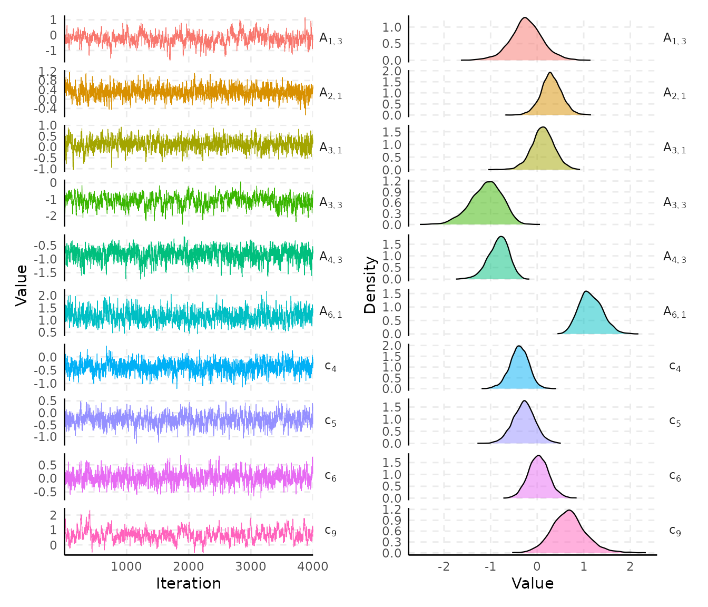
Use the select argument for a specific parameter group
and nshow to define the number of random parameters to
show:
plot(samples, select = "c", nshow = 5)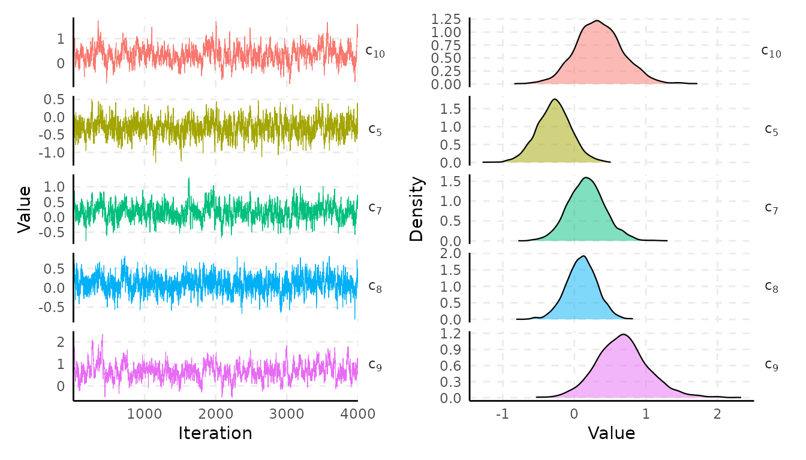
Plotting functions
For more flexibility, spifa provides three individual plotting functions:
They take as input the spifa samples with the
select argument to define the parameter group.
Trace plots
plot_trace() draws the values against iteration per
parameter. By default, it plots one panel per parameter
(facet = TRUE), or all of them in a single panel when
facet = FALSE.
Traceplots of the residual correlation:
plot_trace(samples, select = "Corr")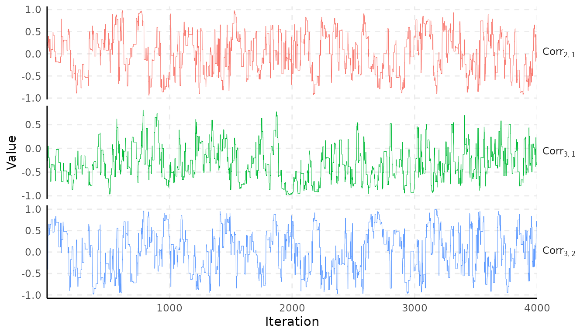
Traceplots of the range parameter of the GPs:
plot_trace(samples, select = "phi", facet = FALSE)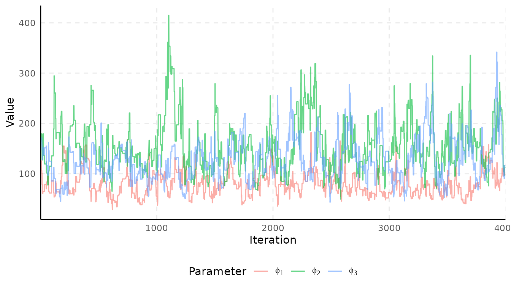
Density plots
plot_density() draws the posterior density of each
parameter in the selected group. Similar to plot_trace(),
you can control the facet argument.
Comparing the easiness parameters:
plot_density(samples, select = "c")#> Picking joint bandwidth of 0.0451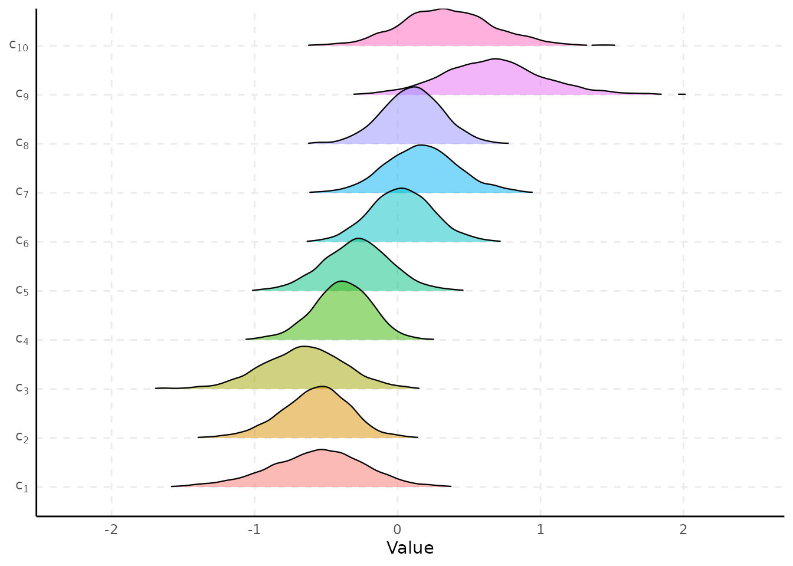
Comparing the predictor effects:
plot_density(samples, select = "B", facet = TRUE, facet_scales = "free_y")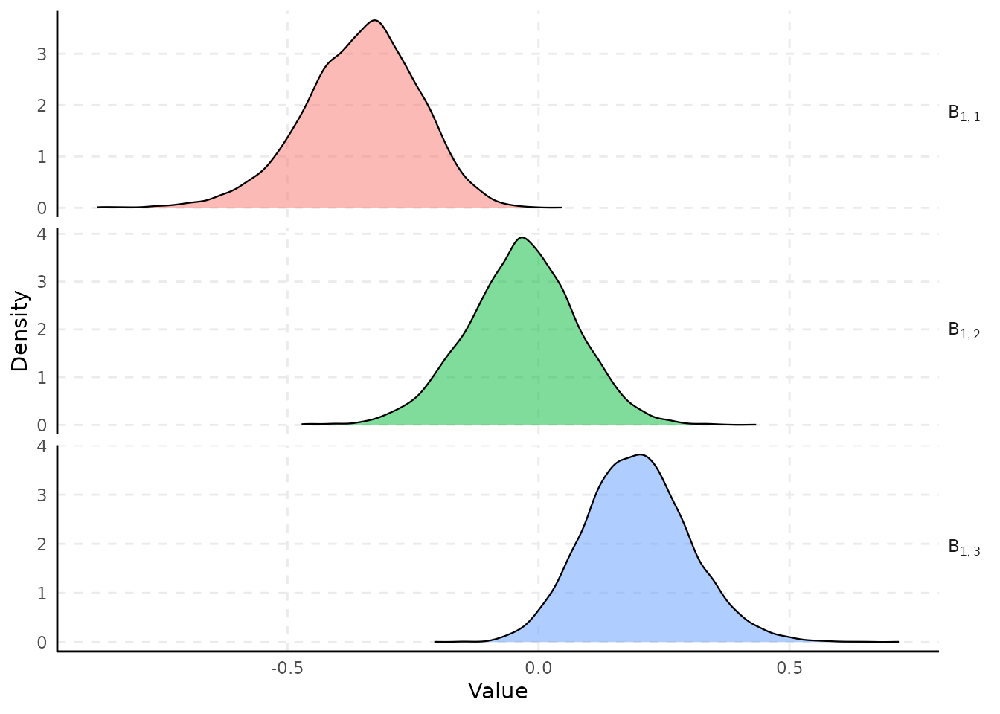
Interval plots
plot_interval() draws the posterior mean/median and
credible interval of each parameter in the selected group.
Compare the discrimination parameters:
plot_interval(samples, select = "A")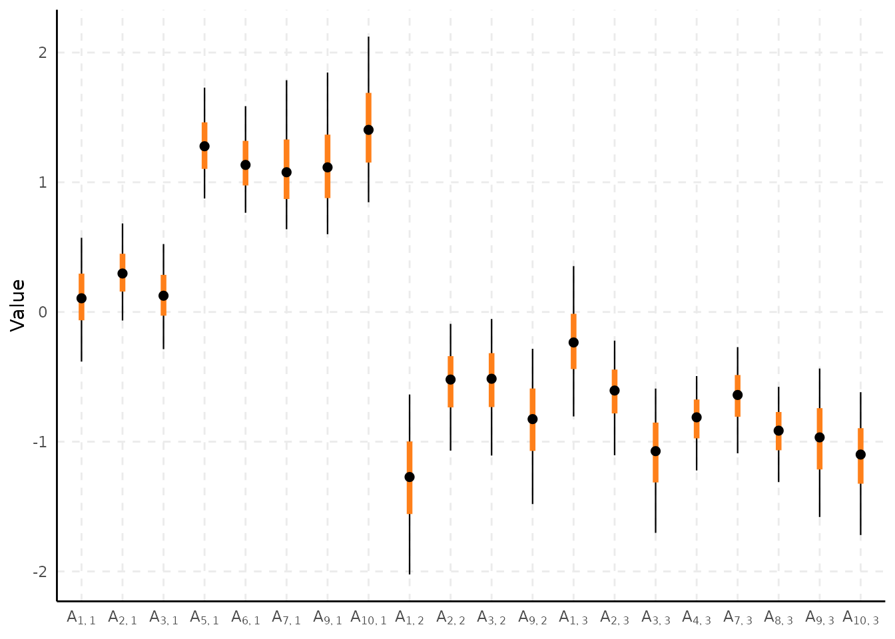
Compare the range parameters:
plot_interval(samples, select = "phi", horizontal = TRUE)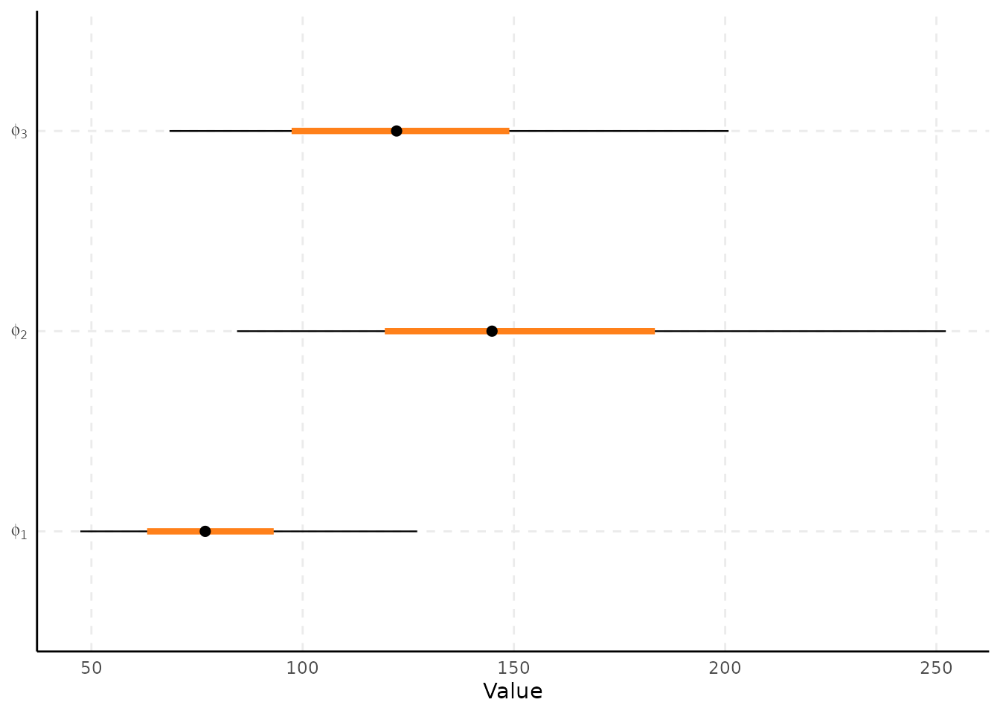
Predict the latent factors
spifa provides Bayesian prediction of the latent
factors at (i) the observed locations and (ii) new locations through the
predict() function.
Observed locations
By default predict() will simply return the samples of
the latent factors at observed locations as a
posterior::draws_array() object:
pred_samples <- predict(samples, burnin = 1000, thin = 5)
posterior::as_draws_df(pred_samples)#> # A draws_df: 600 iterations, 1 chains, and 300 variables
#> Theta[1,1] Theta[2,1] Theta[3,1] Theta[4,1] Theta[5,1] Theta[6,1] Theta[7,1] Theta[8,1]
#> 1 1.625 -0.255 -0.850 -0.54 0.56 -1.05 -0.45 0.078
#> 2 0.294 -0.169 -1.231 -0.72 1.62 -0.85 -0.75 -0.196
#> 3 0.729 -0.267 0.221 -2.14 0.49 -1.18 -0.64 -0.274
#> 4 1.023 -0.027 -0.716 -0.43 1.94 -1.66 -0.81 0.054
#> 5 1.281 0.034 -0.373 -1.80 1.62 -1.60 -0.51 -0.606
#> 6 2.018 -0.140 0.510 -1.82 0.73 -0.23 -0.29 0.635
#> 7 2.003 0.022 0.507 -1.24 0.10 -1.18 -0.11 0.348
#> 8 1.201 -0.581 -1.158 -0.75 1.08 -0.73 -0.50 -0.297
#> 9 1.609 -0.553 -0.509 -1.88 1.07 -0.52 -0.88 -0.408
#> 10 -0.049 -0.185 0.033 -1.16 0.74 -0.53 -0.24 -0.482
#> # ... with 590 more draws, and 292 more variables
#> # ... hidden reserved variables {'.chain', '.iteration', '.draw'}We can visualize a summary (mean by default) of these
predictive samples using plot_predict() and integrate it
with ggplot2 functionality:
plot_predict(pred_samples) +
scale_colour_distiller(palette = "RdBu")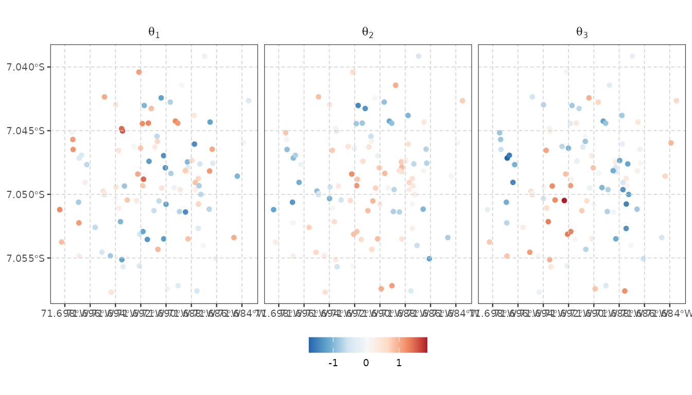
New locations
If prediction is desired for new location/profiles, then the argument
newdata can be provided, which is expected to be a
sf/sfc object containing the new
location/profiles.
First, we create a grid where prediction will be performed. Then, we
create a newdata sf object using a predictor
profile representing an individual with average (standardized)
wealth:
bnd <- st_geometry(ipixuna) |>
st_union() |>
st_convex_hull() |>
st_buffer(50)
newdata <- st_sf(wealth = 0, geometry = st_make_grid(bnd, n = c(40, 40))) |>
st_filter(bnd)
newdata#> Simple feature collection with 1314 features and 1 field
#> Geometry type: POLYGON
#> Dimension: XY
#> Bounding box: xmin: -71.69895 ymin: -7.058242 xmax: -71.683 ymax: -7.038643
#> Geodetic CRS: WGS 84
#> First 10 features:
#> wealth geometry
#> 1 0 POLYGON ((-71.69536 -7.0582...
#> 2 0 POLYGON ((-71.69496 -7.0582...
#> 3 0 POLYGON ((-71.69456 -7.0582...
#> 4 0 POLYGON ((-71.69416 -7.0582...
#> 5 0 POLYGON ((-71.69376 -7.0582...
#> 6 0 POLYGON ((-71.69336 -7.0582...
#> 7 0 POLYGON ((-71.69297 -7.0582...
#> 8 0 POLYGON ((-71.69257 -7.0582...
#> 9 0 POLYGON ((-71.69217 -7.0582...
#> 10 0 POLYGON ((-71.69177 -7.0582...We perform prediction for this newdata and thin the
posterior samples to reduce computational cost:
pred_samples <- predict(samples, newdata = newdata, thin = 10)Now, we use the plot_predict() function to visualize the
predictive mean by default.
plot_predict(pred_samples, boundary = bnd) +
scale_fill_distiller(palette = "RdBu") +
labs(title = "Predictive mean")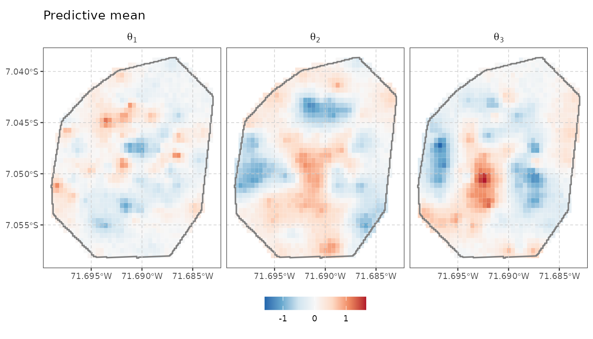
Other summaries can be mapped by simply providing a function in the
stat argument:
plot_predict(pred_samples, boundary = bnd, stat = sd) +
scale_fill_viridis_c(option = "magma") +
labs(title = "Predictive standard deviation")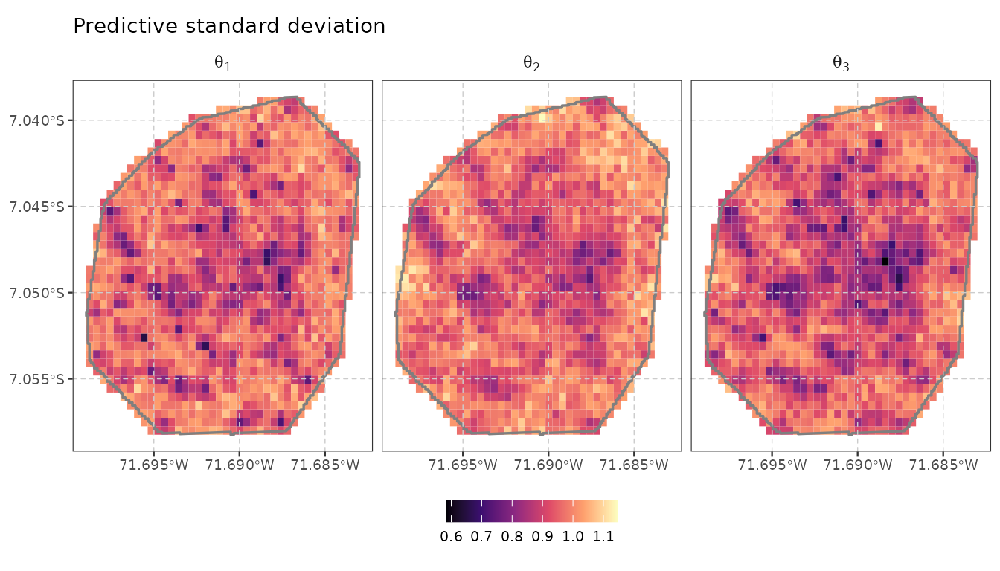
Custom functions can easily be provided, for example, we can plot the probability of exceeding the value of 1 to identify hotspots:
plot_predict(pred_samples, boundary = bnd, stat = function (v) mean(v > 1)) +
scale_fill_viridis_c(limits = c(0, 1), direction = -1) +
labs(title = expression(paste("Exceedance probability: ", P(theta[j] > 1))))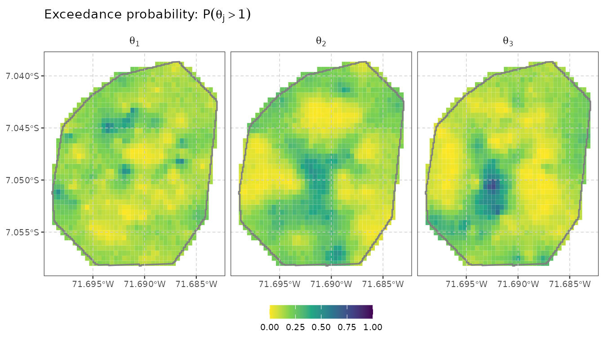